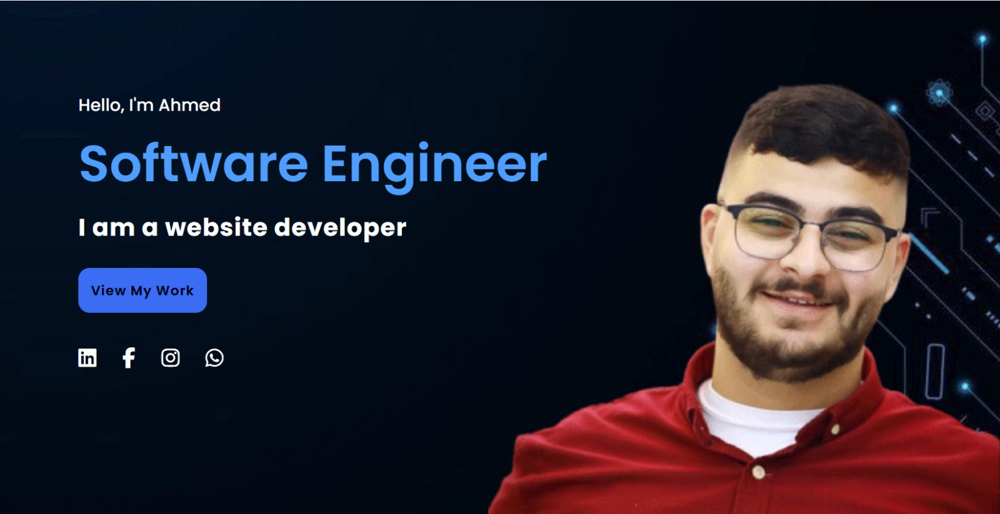

About Me: I am Ahmed Dawoud, a Computer Systems Engineering student at Palestine Technical University - Kadoorie, expected to graduate in 2026. Currently, I serve as the President of the Computer Systems Engineering Club and the IEEE Student Branch at my university. Additionally, I am learning Full Stack development with Al-Marefa Academy and Programming for Data Science with Python through Udacity. I look forward to achieving new milestones in the near future, God willing.
